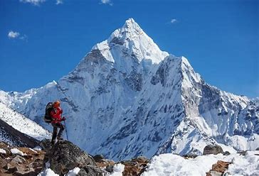
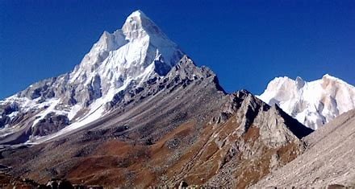

Garhwal Himalaya forms the center part of the Himalaya Mountains. Garhwal is considered as the land of several forts. Garhwal Himalayas symbolizes a spiritual truth beyond the general principles of the common man. This quality has attracted sages and pilgrims for limitless centuries. Central Garhwal consists of the mountain area around the Saraswati-Alaknanda river system and the Dhauli valley. The Dhauli after joining up with the Rishi Ganga eventually joins the Alaknanda at Joshimath. The region is of some considerable significance in Hindu mythology, and Badrinath on the Alaknanda is one of the four holy places of pilgrimage - the others being Kedarnath, Jamnotri and Gangotrii. The exploration and mapping of this region started, as usual, with the survey parties from the Survey of India. Garhwal is the birthplace of two most holy rivers of Hinduism - Ganga River and the Yamuna River. Moreover, this is the place of the char dhams, which means the four Himalayan shrines that have attracted Hindu pilgrims for centuries. There are several great peaks that rise majestically at the Garhwal Himalaya region like the Kamet, Nanda Devi and Trishul. They are separated by the rivers of northern India.
Garhwal Himalaya

| Garhwal Himalaya | |
|---|---|
|  | |
| Highest Peak | |
| Peak | Nanda Devi |
| Elevation | 7,816 m (25,643 ft) |
| Isolation | 389 km (242 mi) |
| Coordinates | 30°22′33″N 79°58′15″E |
| Geography | |
| Countries | India |
| Borders on | Jammu and Kashmir |